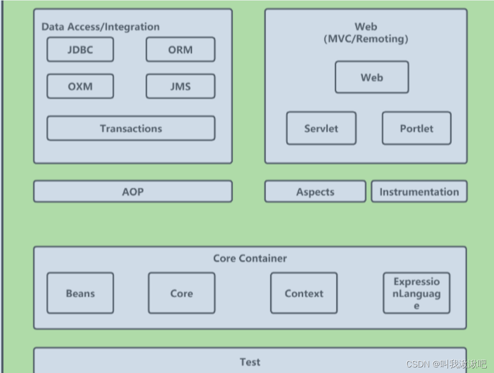

什么是AOP ?
AOP(（Aspect-Oriented Programming)即面向切面编程,它是一种编程范式,是一种思想.它是Spring框架的重要组成部分

AOP能用来干嘛?
它可以在不改变原有代码的情况下，动态地将额外的代码（称之为“切面”）横向地“切入”到原有代码流程中的特定位置，从而达到增强原有代码的目的。AOP的目的是将通用的横切逻辑抽象出来，将它们与核心业务逻辑分离，以提高系统的可维护性和可扩展性。
用通俗易懂的话来讲 就是 在不改变原有代码的基础上添加新的功能.
在实际运用中 AOP通常被应用在日志记录、性能统计、事务管理、异常处理、权限控制等地方.
AOP的主要组成部分
切面（Aspect）：定义了一个横切关注点和与之相关的一组切入点，在这些切入点上定义了横切逻辑。例如，日志、安全、事务等。
切入点（Join Point）：程序执行过程中的特定位置，例如方法调用、异常抛出等。切入点是AOP中的关键概念，可以看作是AOP中的方法。
通知（Advice）：切面在切入点处执行的具体逻辑，包括前置通知、后置通知、返回通知、异常通知、环绕通知等。
目标对象（Target Object）：要应用横切逻辑的对象，即被切面增强的对象。
AOP代理（AOP Proxy）：AOP框架生成的代理对象，用于在目标对象方法执行前后织入切面逻辑。AOP代理可以通过JDK动态代理、CGLIB代理等方式实现。
AspectJ
在Java中，AspectJ是实现AOP的主要框架之一。AspectJ支持以下AOP概念：
切点（Pointcut）：指定要拦截的方法或类。
通知（Advice）：在拦截点上执行的操作，如前置通知（Before Advice）、后置通知（After Advice）、返回通知（After Returning Advice）、异常通知（After Throwing Advice）和环绕通知（Around Advice）。
切面（Aspect）：切点和通知的组合。
连接点（Join Point）：程序执行过程中可能发生的某个点，如方法调用、方法抛出异常等。
织入（Weaving）：将切面应用到应用程序的过程。
在Spring框架中，也提供了AOP的支持。Spring AOP与AspectJ类似，但它提供了更轻量级的AOP解决方案，并允许开发人员将切面应用于Spring IoC容器中的Bean。Spring AOP支持以下通知类型：前置通知、后置通知、返回通知、异常通知和环绕通知。
总的来说，AOP是一种强大的编程范式，可以使代码更加模块化和可重用。它提供了一种分离关注点的方法，使开发人员可以更轻松地管理应用程序的复杂性。
AOP里事件通知类型?
在AOP中，通知（Advice）是织入目标对象中的代码，它会在特定的连接点（Join Point）执行。AOP的通知包括以下几种类型：
前置通知（Before Advice）：在目标方法执行之前执行的通知。
后置通知（After Advice）：在目标方法执行之后执行的通知。
返回通知（After Returning Advice）：在目标方法返回结果后执行的通知。
异常通知（After Throwing Advice）：在目标方法抛出异常后执行的通知。
环绕通知（Around Advice）：可以在目标方法执行前后执行特定的逻辑，还可以控制目标方法的执行，即可以选择是否执行目标方法或者如何执行目标方法。
最终通知（After Finally Advice）：在目标方法执行完毕后，无论是否抛出异常都会执行的通知。
前置通知
@Before("execution(* com.example.service.UserService.*(..))")
public void beforeAdvice() {
// 在目标方法执行前执行的逻辑
}
后置通知
@After("execution(* com.example.service.UserService.*(..))")
public void afterAdvice() {
// 在目标方法执行后执行的逻辑
}
返回通知
@AfterReturning(pointcut = "execution(* com.example.service.UserService.*(..))", returning = "result")
public void afterReturningAdvice(Object result) {
// 在目标方法返回结果后执行的逻辑，result 是目标方法的返回值
}
异常通知
@AfterThrowing(pointcut = "execution(* com.example.service.UserService.*(..))", throwing = "ex")
public void afterThrowingAdvice(Exception ex) {
// 在目标方法抛出异常后执行的逻辑，ex 是目标方法抛出的异常
}
环绕通知
@Around("execution(* com.example.service.UserService.*(..))")
public Object aroundAdvice(ProceedingJoinPoint joinPoint) throws Throwable {
// 在目标方法执行前后执行特定的逻辑，可以控制目标方法的执行
// 执行目标方法
Object result = joinPoint.proceed();
// 在目标方法执行后执行的逻辑
return result;
}
切点定义方式
注解
纯注解形式的 AOP 在 Spring Boot 中使用也非常简单，具体步骤如下：
定义注解
在需要增强的方法上添加注解 @LogExecutionTime，该注解可以自定义一个别名，比如 @MyLog。
@Target(ElementType.METHOD)
@Retention(RetentionPolicy.RUNTIME)
public @interface LogExecutionTime {
}
使用注解
创建一个切面类，使用注解 @Aspect 表示该类是一个切面类，使用注解 @Component 将该类交给 Spring 管理。
内置配置
@Aspect
@Component
public class LogAspect {
@Around("@annotation(com.xxx.LogExecutionTime)")
public Object logExecutionTime(ProceedingJoinPoint joinPoint) throws Throwable {
long start = System.currentTimeMillis();
Object proceed = joinPoint.proceed();
long executionTime = System.currentTimeMillis() - start;
System.out.println(joinPoint.getSignature() + " executed in " + executionTime + "ms");
return proceed;
}
}
注解配置
@Aspect
@Component
public class LogAspect {
@Pointcut("@annotation(com.xxx.LogExecutionTime)")
private void pointcut() {
// 切点表达式定义方法，方法修饰符可以是private或public
}
@Around("pointcut()")
public Object logExecutionTime(ProceedingJoinPoint joinPoint) throws Throwable {
long start = System.currentTimeMillis();
Object proceed = joinPoint.proceed();
long executionTime = System.currentTimeMillis() - start;
System.out.println(joinPoint.getSignature() + " executed in " + executionTime + "ms");
return proceed;
}
}
公共配置
public class CommonPointcut {
@Pointcut("@annotation(com.xxx.LogExecutionTime)")
public void pointcut() {
// 注意定义切点的方法的访问权限为public
}
}
@Aspect
@Component
public class LogAspect {
@Around("com.xxx.CommonPointcut.pointcut()")
public Object logExecutionTime(ProceedingJoinPoint joinPoint) throws Throwable {
long start = System.currentTimeMillis();
Object proceed = joinPoint.proceed();
long executionTime = System.currentTimeMillis() - start;
System.out.println(joinPoint.getSignature() + " executed in " + executionTime + "ms");
return proceed;
}
}
切点表达式
execution([可见性] 返回类型 [声明类型].方法名(参数) [异常类型])
其中：
execution：切入点表达式关键字；
[可见性]：可选，指定方法的可见性，如 public、private、protected 或 *；
返回类型：指定方法的返回类型，如 void、int、String 等；
[声明类型]：可选，指定方法所属的类、接口、注解等声明类型；
方法名：指定方法的名称，支持通配符 *；
参数：指定方法的参数类型列表，用逗号分隔，支持通配符 *；
[异常类型]：可选，指定方法可能抛出的异常类型。
例:
execution(public * com.example.service.UserService.addUser(…))：指定 com.example.service.UserService 类中的 addUser 方法；
execution(* com.example.service..(…))：指定 com.example.service 包下的所有方法；
execution(* com.example.service….(…))：指定 com.example.service 包及其子包下的所有方法；
execution(* com.example.service.UserService.*(String))：指定 com.example.service.UserService 类中所有参数类型为 String 的方法。
此外，切入点表达式还支持 &&（逻辑与）、||（逻辑或）和 !（逻辑非）等运算符，以及 @annotation、@within、@args 等注解限定符。